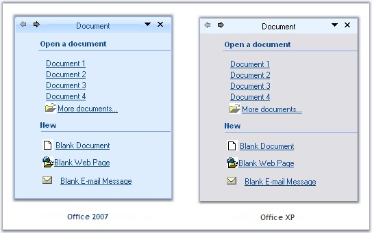
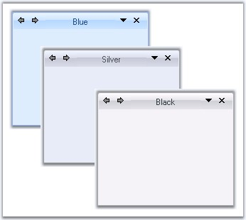

This section comprises the below topics:
XPTaskPane Foreground
Font style and fore color of the Task pages can be set using XPTaskPane.Font and XPTaskPane.ForeColor properties.
 Note: These settings can be overridden by
individual XPTaskPage.Font and XPTaskPage.ForeColor properties.
Note: These settings can be overridden by
individual XPTaskPage.Font and XPTaskPage.ForeColor properties.
|
[C#]
this.xpTaskPane1.Font = new System.Drawing.Font("Verdana", 8.25F); this.xpTaskPane1.ForeColor = System.Drawing.Color.SteelBlue; |
|
[VB.NET]
Me.xpTaskPane1.Font = New System.Drawing.Font("Verdana", 8.25F) Me.xpTaskPane1.ForeColor = System.Drawing.Color.SteelBlue |
Header Foreground
The font style and forecolor for the Header text is controlled through HeaderLabel.Font and HeaderLabel.ForeColor properties.
|
[C#]
this.xpTaskPane1.HeaderLabel.Font = new System.Drawing.Font("Verdana", 9.75F, System.Drawing.FontStyle.Bold); this.xpTaskPane1.HeaderLabel.ForeColor = System.Drawing.Color.Navy; |
|
[VB.NET]
Me.xpTaskPane1.HeaderLabel.Font = New System.Drawing.Font("Verdana", 9.75F, System.Drawing.FontStyle.Bold) Me.xpTaskPane1.HeaderLabel.ForeColor = System.Drawing.Color.Navy |
Figure 1256: Font = "Verdana, 9.75, Bold"; ForeColor = "Navy"
The Visual appearance of XP Task Pane can be defined by the XPTaskPane.VisualStyle property. It supports OfficeXP and new Office2007 styles which provides you a more polished user interface.
|
[C#]
this.xpTaskPane1.VisualStyle = VisualStyle.Office2007; this.xpTaskPane1.VisualStyle = VisualStyle.OfficeXP; |
|
[VB.NET]
Me.xpTaskPane1.VisualStyle = VisualStyle.Office2007 Me.xpTaskPane1.VisualStyle = VisualStyle.OfficeXP |

Figure 1257: Visual Styles for the XPTaskPane
Office Color Schemes
XPTaskPane supports all the three office color schemes.
|
[C#]
//Setting Blue color scheme this.xpTaskPane1.Office2007ColorScheme = Syncfusion.Windows.Forms.Office2007Theme.Blue; //Setting Silver color scheme this.xpTaskPane1.Office2007ColorScheme = Syncfusion.Windows.Forms.Office2007Theme.Silver; //Setting Black color scheme this.xpTaskPane1.Office2007ColorScheme = Syncfusion.Windows.Forms.Office2007Theme.Black; |
|
[VB.NET]
'Setting Blue color schemes Me.xpTaskPane1.Office2007ColorScheme = Syncfusion.Windows.Forms.Office2007Theme.Blue 'Setting Silver color schemes Me.xpTaskPane1.Office2007ColorScheme = Syncfusion.Windows.Forms.Office2007Theme.Silver 'Setting Black color schemes Me.xpTaskPane1.Office2007ColorScheme = Syncfusion.Windows.Forms.Office2007Theme.Black |

Figure 1258: Office Color Schemes illustrated for XPTaskPane
Custom Colors
We can also apply custom colors to the XPTaskPane by setting Office2007ColorScheme to "Managed" and specifying the custom color through the ApplyManagedColors method as follows.
|
[C#]
this.xpTaskPane1.Office2007ColorScheme = Syncfusion.Windows.Forms.Office2007Theme.Managed; Office2007Colors.ApplyManagedColors(this, Color.Lime); |
|
[VB.NET]
Me.xpTaskPane1.Office2007ColorScheme = Syncfusion.Windows.Forms.Office2007Theme.Managed; Office2007Colors.ApplyManagedColors(Me, Color.Lime) |

Figure 1259: Custom Color = "Lime"